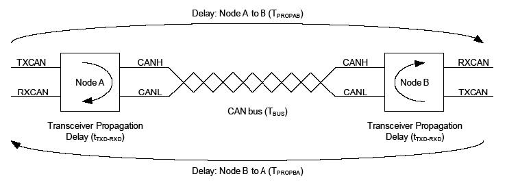

Figure 38-4 illustrates the propagation delay between two CAN nodes on the bus, assuming Node A is transmitting a CAN message. The transmitted bit will propagate from the transmitting CAN Node A through the transmitting CAN transceiver, over the CAN bus, through the receiving CAN transceiver and into the receiving CAN Node B. During the arbitration phase of a CAN message, the transmitter samples the CAN bus and checks if the transmitted bit matches the received bit. The transmitting node has to place the sample point after the maximum propagation delay.
Equation 38-9 describes the maximum propagation delay; where tTXD – RXD is the propagation = delay of the transceiver, a maximum of 255 ns according to ISO11898-1:2015. TBUS is the delay on the CAN bus, which is approximately 5 ns/m. The factor 2 comes from the worst-case when Node B starts transmitting exactly when the bit from Node A arrives.
